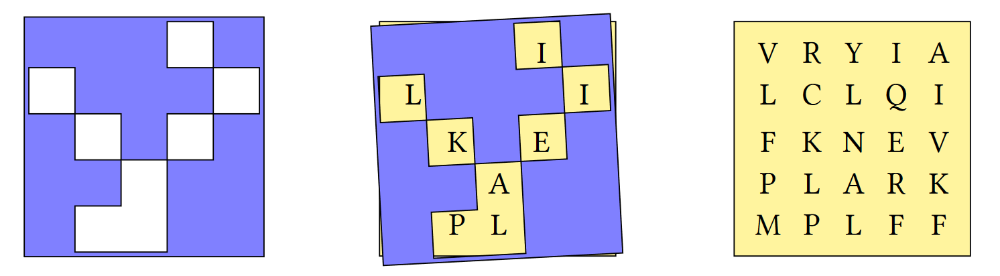

Part 2
Spot the Difference
In each of the following scenarios, think: - What output was intended? - Why doesn't the written expression product the intended output? - What would you change to fix the expression?
-
I have 100 sweets in a bowl. I give 10 to James, 13 to Vela, 11 to Malai and 14 to Alex. 31 fall on the floor and the bowl breaks. How many do I have left?
100 – 10 – 13 – 11 – 14 - 31 -
Find \(3+\sqrt[3]{27}\)
3 + ÷3*27 -
Find the distance between the points (3,12) and (6,16) in Euclidean space
((16-12)*2 + (6-3)*2)*0.5 -
List the numbers from 13 to 27 inclusive
⍳ 27 - 13 -
Return 1 when X>3 and X≤7
X ← 10 X > 3 ∧ X ≤ 7 -
Sum the salaries of employees in group G
Grp ← 'AFGFG' Sal ← 32000 33500 41000 33900 41500 +/ Grp='G' / Sal
Vectors and Matrices
-
Define the numeric vector
numsnums ← 3 5 8 2 1- Using
nums, definemat
mat3 5 8 2 1 3- Using
mat, definewide
wide3 5 8 3 5 8 2 1 3 2 1 3- Using
mat, definestack
stack3 5 8 3 5 8 2 1 3 2 1 3 - Using
-
Why does
101='101'evaluate to a 3-element list?
Slashes
By hand, evaluate the following expressions:
+/3 1 43/3 1 42 6++/5 22 6+3/52 6+2/5
Indexing
-
Write a function
PassFailwhich takes an array of scores and returns an array of the same shape in whichFcorresponds to a score less than 40 andPcorresponds to a score of 40 or more.PassFail 35 40 45 FPP PassFail 2 5⍴89 77 15 49 72 54 25 18 57 53 PPFPP PFFPP
Analysing Text
-
Analysing text
-
Write a function test if there are any vowels
'aeiou'in text vector⍵AnyVowels 'this text is made of characters' 1 AnyVowels 'bgxkz' 0 -
Write a function to count the number of vowels in its character vector argument
⍵CountVowels 'this text is made of characters' 9 CountVowels 'we have twelve vowels in this sentence' 12 -
Write a function to remove the vowels from its argument
RemoveVowels 'this text is made of characters' ths txt s md f chrctrs
-
APL Quest Problems
1: Grille
A Grille is a square sheet with holes cut out of it which, when laid on top of a similarly-sized character matrix, reveals a hidden message.

Write an APL functionGrille which:
- takes a character matrix left argument where a hash '#' represents opaque material and a space ' ' represents a hole.
- takes a character matrix of the same shape as right argument
- returns the hidden message as a character vector
(2 2⍴'# # ') Grille 2 2⍴'LHOI'
HI
grid ← 5 5⍴'VRYIALCLQIFKNEVPLARKMPLFF'
grille ← 5 5⍴'⌺⌺⌺ ⌺ ⌺⌺⌺ ⌺ ⌺ ⌺⌺⌺ ⌺⌺⌺ ⌺⌺'
grid grille
┌─────┬─────┐
│VRYIA│⌺⌺⌺ ⌺│
│LCLQI│ ⌺⌺⌺ │
│FKNEV│⌺ ⌺ ⌺│
│PLARK│⌺⌺ ⌺⌺│
│MPLFF│⌺ ⌺⌺│
└─────┴─────┘
grille Grille grid
ILIKEAPL
2: Attack of the Mutations!
This problem is inspired by the Counting Point Mutations problem found on the excellent Bioinformatics education website rosalind.info.
Write a function that:
- takes right and left arguments that are character vectors or scalars of equal length – these represent DNA strings.
- returns an integer representing the Hamming distance (the number of differences in corresponding positions) between the arguments.
Hint: The plus function X+Y could be helpful.
Examples
'GAGCCTACTAACGGGAT' (your_function) 'CATCGTAATGACGGCCT'
7
'A' (your_function) 'T'
1
'' (your_function) ''
0
(your_function)⍨ 'CATCGTAATGACGGCCT'
0
3: Counting DNA Nucleotides?
This problem was inspired by Counting DNA Nucleotides found on the excellent bioinformatics website rosalind.info.
Write a function that:
- takes a right argument that is a character vector or scalar representing a DNA string (whose alphabet contains the symbols 'A', 'C', 'G', and 'T').
- returns a 4-element numeric vector containing the counts of each symbol 'A', 'C', 'G', and 'T' respectively.
Examples
(your_function) 'AGCTTTTCATTCTGACTGCAACGGGCAATATGTCTCTGTGTGGATTAAAAAAAGAGTGTCTGATAGCAGC'
20 12 17 21
(your_function) ''
0 0 0 0
(your_function) 'G'
0 0 1 0
4: Making the Grade
| Score Range | 0-64 |
65-69 |
70-79 |
80-89 |
90-100 |
| Letter Grade | F | D | C | B | A |
Write a function that, given an array of integer test scores in the inclusive range 0 to 100, returns a list of letter grades according to the table above.
Grade 0 10 75 78 85FFCCB